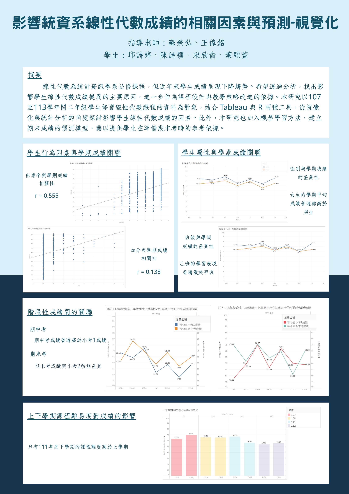
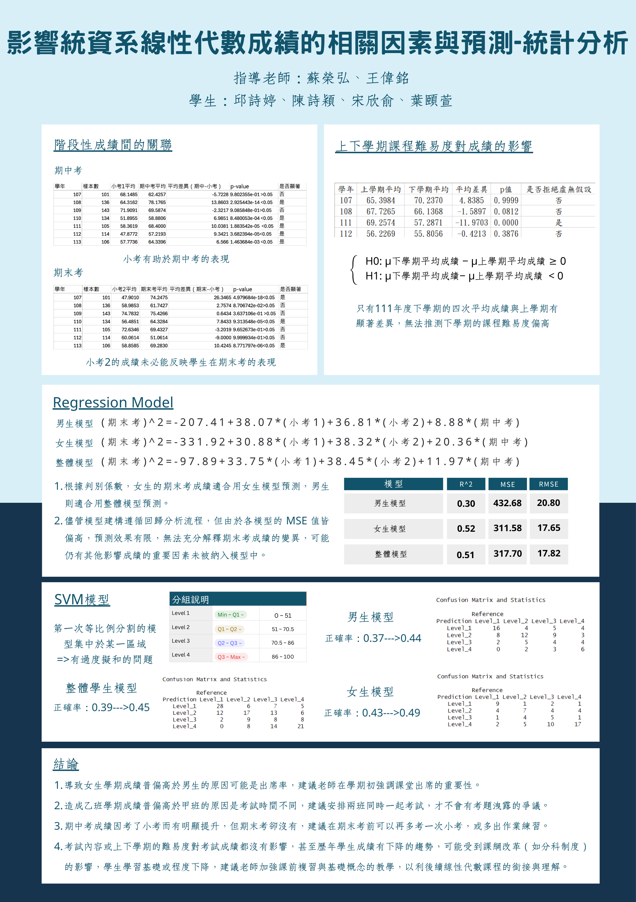

關於我
你好！我是邱詩婷，輔仁大學統計資訊學系四年級學生。在統計的背景之下，我希望自己不僅是數據的處理者，更是數據與決策間的溝通橋樑，從資料中挖掘其隱藏價值並成為資訊。
人格特質
理性冷靜做事沉穩，善於溝通，有責任心。
核心優勢與技能
精通資料清理、統計建模與視覺化呈現。擅長運用 Python、R、SPSS、SQL 與 Tableau 等工具做數據分析。
語文能力
中文 / 英文(多益825)。
團隊合作模式
重視信任、偏好明確的分工與目標設定。
生活愛好
喜歡看辯論/談話性節目、有氧運動、打羽球。
聯絡資訊
Email: Qiuuuu0511@gmail.com
統計學術作品
1. 畢業專題：以台股加權指數研究機器學習模型（XGBoost）是否能改進技術分析
運用 XGBoost 模型驗證機器學習效能，透過歷史資料回測績效評估，比較機器學習與傳統策略在報酬率和風險管理方面的差異。
XGBoost 建模
金融數據分析
量化策略回測
2. 使用政府開放資料（113 年 7 月 A2 交通事故資料）進行機器學習模型實作
透過機器學習模型進行事故特徵擷取與死傷嚴重程度（單人/多人受傷）的預測。
Python (Scikit-learn)
資料採礦 (Data Mining)
模型建構/優化
3. 使用SRDA學術資料庫資料進行跨世代網路沉迷風險因素研究
運用學術調查研究資料庫（SRDA）之數據進行分析，結合 羅吉斯迴歸 計算勝算比與決策樹描繪行為路徑 。
社會科學數據分析
機器學習
行為預測建模
4. NCBI 轉錄體大數據分析：重度憂鬱症伴隨自殺傾向之基因探究
基於 NCBI GEO 資料庫（GSE291874）進行血液轉錄組分析，找出重度憂鬱症（MDD）伴隨急性自殺傾向之關鍵調控因子。
醫療統計
生物資訊工具應用
視覺化相關成品 (Tableau)
動態儀表板：全台新冠肺炎確診人數分析

跨域學習
教育大數據微學程：教育資料結合大數據分析
運用R統計軟體分析系上線性代數成績，並使用tableau視覺化。專題成果如下：


大數據跨領域微學程：網頁系統與資料庫實作
受保密協議約束，項目實作中。僅列出技術實作範疇：
- 專案透明化： 實施週進度視覺化管理，利用報表同步更新團隊資訊以及專案狀況。
- 資料整理： 負責原始數據之清洗與轉置，方便後續分析流程。
- 新增OLAP 功能： 實作線上分析處理功能，支援多維度數據視覺化分析。
- 網頁前端美化： 運用 CSS 與 Bootstrap 提升使用者介面的易用性與美感。
專業證照 (點擊放大)
(TQC+) 程式語言 Python 3
程式語言 Python 3證照.jpg)
(TQC+)網頁資料擷取與分析 Python 3證照
網頁資料擷取與分析 Python 3證照.jpg)